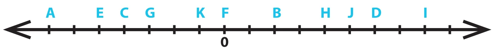
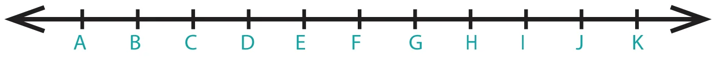
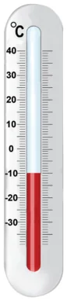
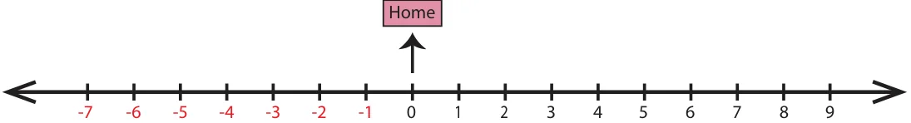
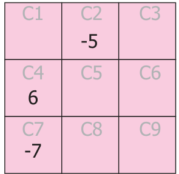
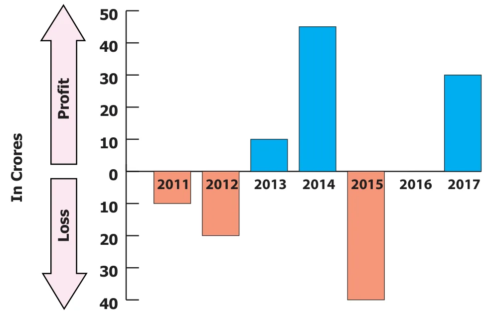

Exercise 2.2
Miscellaneous Practice Problems
- Write two different real life situations that represent the integer \(-3\).
- Mark the following numbers on a number line
- All integers which are greater than \(-7\) but less than 7.
- The opposite of 3.
- 5 units to the left of \(-1\).
- Construct a number line that shows the depth of 10 feet from the ground level and its opposite.
- Identify the integers and mark on the number line that are at a distance of 8 units from \(-6\).
- Answer the following questions from the number line given below .

- Which integer is greater : G or K ? Why ?
- Find the integer that represents C.
- How many integers are there between G and H?
- Find the pairs of letters which are opposite of a number.
- Say True or False : 6 units to the left of D is \(-6\).
- If G is 3 and C is \(-1\), what numbers are A and K on the number line?

- Find the integers that are 4 units to the left 0 and 2 units to the right of \(-3\).
Challenge Problems

- Is there the smallest and the largest number in the set of integers? Give reason.
- Look at the Celsius Thermometer and answer the following questions:
- What is the temperature that is shown in the Thermometer?
- Where will you mark the temperature \(5^{\circ}\text{C}\) below \(0^{\circ}\text{C}\) in the Thermometer?
- What will be the temperature, if \(10^{\circ}\text{C}\) is reduced from the temperature shown in the Thermometer?
- Mark the opposite of \(15^{\circ}\text{C}\) in the Thermometer.
- P, Q, R and S are four different integers on a number line. From the following clues, find these integers and write them in ascending order.
- S is the least of the given integers.
- R is the smallest positive integer.
- The integers P and S are at the same distance from 0.
- Q is 2 units to the left of integer R.
- Assuming that the home to be the starting point, mark the following places in order on the number line as per instructions given below and write their corresponding integers.

Places: Home, School, Library, Playground, Park, Departmental Store, Bus Stand, Railway Station, Post Office, Electricity Board.
Instructions:
- Bus Stand is 3 units to the right of Home.
- Library is 2 units to the left of Home.
- Departmental Store is 6 units to the left of Home.
- Post Office is 1 unit to the right of the Library.
- Park is 1 unit right of Departmental Store.
- Railway Station is 3 units left of Post Office.
- Bus Stand is 8 units to the right of Railway Station.
- School is next to the right of Bus Stand.
- Playground and Library are opposite to each other.
- Electricity Board and Departmental Store are at equal distance from Home.
- Complete the table using the following hints:

C1: the first non-negative integer.
C3: the opposite to the second negative integer.
C5: the additive identity in whole numbers.
C6: the successor of the integer in C2.
C8: the predecessor of the integer in C7.
C9: the opposite to the integer in C5. - The following bar graph shows the profit \((+)\) and loss \((-)\) of a small scale company (in crores) between the years 2011 to 2017.

- Write the integer that represents a profit or a loss for the company in 2014?
- Denote by an integer on the profit or loss in 2016.
- Denote by integers on the loss for the company in 2011 and 2012.
- Say True or False: The loss is minimum in 2012.
- Fill in: The amount of loss in 2011 is \(\underline{\qquad\qquad}\) as profit in 2013.